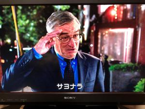
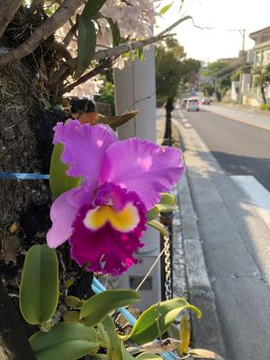

うるがいの話 ある日
最新: インターン【うるがいの話 ある日】とは 一日だけのプログです
『うるがいの話』の最新一日だけのプログで、通信料が少なく経済的だ。カニの画像をクリックすると全ての日付が載る『うるがいの話』サイトを表示します
|
|
【うるがいの話】 うるがい(ｳﾙｶﾞｲ urugai)とは、『もずくがに』の名前でとても大きくなります。 |
|---|---|
|
|
【カミマヤーの話】 猫のことを方言でマヤーといいます。カミマヤー（kamimayaa）とは、神の猫のことです。 |
|
【たながぁの音楽】 たながぁ（ﾀﾅｶﾞｰtanagaa）とは手長えびのことで、何種類かあり大きいのは車 エビぐらいになります。 |

|
【ぶながぁの話】 ぶながー(bunagaa)とは、赤い髪の毛、赤い身体、そして身長は１ｍ２０ｃｍ ぐらい、川の蟹を食べているの目撃された。場所は沖縄県国頭郡大宜味村のと ある村僕の隣近所に住んでいる爺さんから、聞いた話です。 |
|
|
【ギーマの話】 ギーマ(giima)とは、山原の里山に咲くスズランに似た、 花を付けます。実は食べられます、 気が付くと口の周りが紫になっています。 |
2022年03月06日 (日）インターン
16:11

インターン【intern】専門職になる人に課せられる実地訓練。またその実習生
動画研修の課題を午前で提出する、９番目だった。今回は、高性能ＰＣ３号を
利用した（所要時間は１日半）。枠付きのタイトルの文字が中央に配置されな
い事態に３時間ハマる、原因はフォントの種類だった。さすがに講師に教えて
くれと頼もうかと思ったのだが・・・。いよいよ明日の月曜日が最後の講習で
ある。
この前、ロバート・デ・ニーロが主演の『マイ・インターン』を観た。２度目
だが、今回は退職した後なので実感は全然違うのである。就活で面談した経営
者から『現場の若い人たちとどう折り合いをつけるのかが、難しいかもしれな
いですね』と言われたとき、お！、そうか私は経営者よりも歳をくっている。
Ⅾ✕人材育成の講師（見た目は完全にオッサンである）より、はるかに歳をと
っている。就職したら『マイ・インターン』を参考にしようと思った次第７０
歳になるデ・ニーロが面接で『８０歳になったら』と質問された（答えなかっ
たが）。私だったら、仕事していると答えようと思う。

昨日、不正取引にあった子供がお金が戻ってきたヨとただし、海外からデビッ
トカードを取引した時の手数料分（子供は海外にいないと知っているのに）は
戻って来なかった。ん、銀行は自分たちの取引だけ保証するのか、なんかおか
しいような気がするが。
１６時００分 ビットコインの総資産 ￥１３、１３６↑